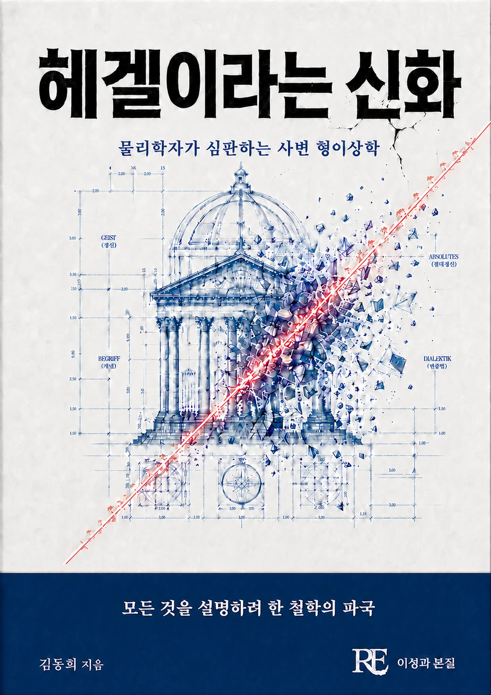

철학의 신화 속에서 헤겔을 끌어내리다. 정신, 개념, 변증법, 절대정신이라는 사변 체계를 물리학자의 엄정한 시선으로 다시 심문한다.
기획 의도
절대정신과 변증법으로 대표되는 헤겔의 사변 체계를, 물리학자의 엄정한 검증의 시선으로 다시 들여다 본다. 철학의 신화를 걷어내고 그 위에 무엇이 남는지를 묻는 비판적 헤겔론이다.
예상 독자
헤겔 철학과 독일 관념론에 관심 있는 독자, 과학철학적 시선의 비판적 사유를 좋아하는 독자.
목차
들어가며
제1부 — 야망: 제2의 아리스토텔레스가 되려 한 사람
- 1장. 칸트를 넘어서겠다는 야망
- 2장. 아리스토텔레스 체계의 핵심 — 헤겔이 탐낸 왕국
- 3장. 2천 년 된 무기를 다시 들다 — 본질주의
- 4장. 이성이 곧 실재다 — 증명이 아니라 주장
- 5장. 전 학문을 삼킨 하나의 도면, 그리고 지워진 현실
- 6장. 1817년의 학문 상황 — 몰이해가 낳은 파국의 징조
제2부 — 인식론의 원죄: 『정신현상학』이라는 각본
- 7장. 물자체를 지운 손 — 칸트의 한계선을 걷어내다
- 8장. 전제 없는 관찰이라는 가면
- 9장. 의식의 사다리 — 감각적 확신에서 절대지까지
- 10장. 주인과 노예 — 서사가 논증을 대신할 때
- 11장. ‘이성이 곧 현실이다’가 태어나다
- 12장. 절대지 — 결코 갚지 못할 약속어음
제3부 — 무엇이든 증명하는 기계: 논리학이라는 궤변
- 13장. 아리스토텔레스 오독 — 논리라는 잣대를 움직이게 만들다
- 14장. ‘존재=무=생성’과 모순의 허용
- 15장. 지양 — 어느 쪽으로 읽어도 실격인 딜레마
제4부 — 자연과학이라는 유일한 시험대: 측정이 매긴 0점
- 16장. 뉴턴을 얕보다 — ‘개념 없는 경험’이라는 오독
- 17장. 이해하지도 못한 미적분을 훈계하다
- 18장. 관찰 대신 방구석 생각으로 자연을 조립하다
- 19장. 빛과 색: 뉴턴을 버리고 괴테 편에 서다
- 20장. 자연 법칙을 몇 개의 문장으로 만들 수 있다는 황당함
- 21장. 과학을 무시하며 자기완결하는 체계
- 22장. 가속기 — 0점짜리 답안 한 장이 체계 전체를 무너뜨리다
제5부 — 붕괴 이후: 심판관이 없는 영토에서만 존속할 수 있는 것들
- 23장. 헤르더에게 빌린 것
- 24장. 역사는 ‘항상 발전한다’는 동화
- 25장. 문명에 등급을 매기다
- 26장. 유토피아는 이미 프로이센에 도착했다
- 27장. ‘이성의 간계’ — 개인의 희생을 진보의 비용으로 처리하다
- 28장. 국가라는 신, 개인을 지운 전체
제6부 — 칼을 겨눈 지성들: 비판의 계보
- 29장. 쇼펜하우어 — 강단을 점령한 궤변에 대하여
- 30장. 키에르케고르 — 성을 짓고 개집에 사는 사람
- 31장. 러셀과 무어 — 분석 철학의 반란
- 32장. 카르납에서 들뢰즈까지 — 현대 철학의 반(反)헤겔 전선
- 33장. 포퍼와 레비나스 — 바깥이 없는 체계
- 34장. 물리학자의 자리에서 — 여섯 개의 언어가 만나는 지점
제7부 — 신화가 무너지다
- 35장. 결론을 미리 내려놓고 거꾸로 지은 체계
- 36장. 야망이 딛고 서야 할 배경을 알지 못했다
- 37장. 프레임에 갇혀 현실을 못 보는 사람들
에필로그
장별 보충 설명
도서목록으로 돌아가기